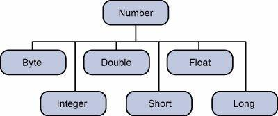

Java - Numbers Class
Normally, when we work with Numbers,
we use primitive data types such as byte, int, long, double, etc.
Example:
int i = 5000; float gpa = 13.65; byte mask = 0xaf;
However, in development, we come
across situations where we need to use objects instead of primitive data types.
In-order to achieve this Java provides wrapper classes for each primitive data
type.
All the wrapper classes (Integer,
Long, Byte, Double, Float, Short) are subclasses of the abstract class Number.

This wrapping is taken care of by
the compiler, the process is called boxing. So when a primitive is used when an
object is required, the compiler boxes the primitive type in its wrapper class.
Similarly, the compiler unboxes the object to a primitive as well. The Number
is part of the java.lang package.
Here is an example of boxing and
unboxing:
public class Test{ public static void main(String args[]){ Integer x = 5; // boxes int to an Integer object x = x + 10; // unboxes the Integer to a int System.out.println(x); } }
This would produce the following
result:
15
When x is assigned integer values,
the compiler boxes the integer because x is integer objects. Later, x is
unboxed so that they can be added as integers.
Number
Methods:
Here is the list of the instance
methods that all the subclasses of the Number class implement:
|
SN |
Methods
with Description |
|
1 |
xxxValue() |
|
2 |
compareTo() |
|
3 |
equals() |
|
4 |
valueOf() |
|
5 |
toString() |
|
6 |
parseInt() |
|
7 |
abs() |
|
8 |
ceil() |
|
9 |
floor() |
|
10 |
rint() |
|
11 |
round() |
|
12 |
min() |
|
13 |
max() |
|
14 |
exp() |
|
15 |
log() |
|
16 |
pow() |
|
17 |
sqrt() |
|
18 |
sin() |
|
19 |
cos() |
|
20 |
tan() |
|
21 |
asin() |
|
22 |
acos() |
|
23 |
atan() |
|
24 |
atan2() |
|
25 |
toDegrees() |
|
26 |
toRadians() |
|
27 |
random() |